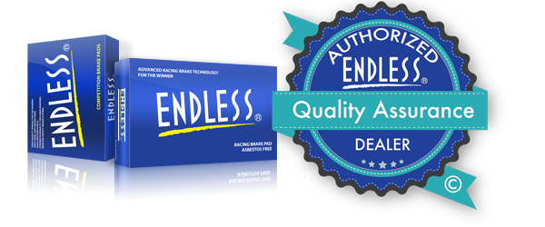
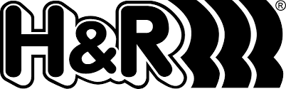
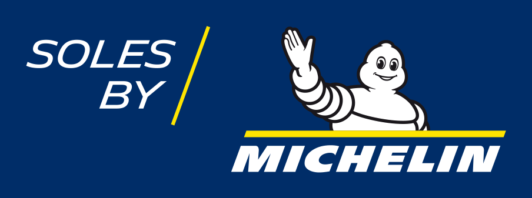
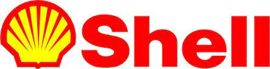

Über Uns
Unser Ziel ist es, unser selbst erstelltes Projekt für die Öffentlichkeit zugänglich zu machen und für anstehende Go-Kart-Rennen zu qualifizieren. Wir sind eine Gruppe von Schülern des Berufsbildenen Gymnasiums in Westerburg, die sehr interessiert an der zukünfigen Go-Kart-Technik sind.
Sponsoren

Endless Brake Technology Europe AB ist das Vertriebs- und Technikzentrum der Marke Endless für den europäischen Markt und kümmert sich um den gesamten Vertrieb und technischen Support einschließlich der Händler- und Kundenteams, unabhängig davon, ob es sich um Formel 1™ oder Straßenfahrzeuge handelt. Sie sind auch für die Produkt-Entwicklung und -anpassung für den europäischen Markt verantwortlich und haben eine direkte Technik- und Support-Kooperation mit Endless Advance Co. Ltd. in Japan, die erstklassige Bremsprodukte herstellt. Endless Advance Co. Ltd. verfügt über eines der fortschrittlichsten Entwicklungszentren für Bremsen in der Welt und arbeitet kontinuierlich daran, die Bremstechnologie weiter zu verbessern und die Erwartungen des anspruchsvollen Motorsportmarktes zu übertreffen. Endless-Kunden haben sich zahlreiche Meistertitel in der Formel 1™ und WRC gesichert, legendäre Rennen wie Le Mans, den Nürburgring und das 24-Stunden-Rennen von Spa gewonnen und mehrfach die Rallye Dakar bezwungen.
H&R

Die H&R Spezialfedern GmbH & Co. KG ist einer der weltweit führenden Hersteller hochwertiger Fahrwerkskomponenten mit Anwendungen für über 4.000 Fahrzeugmodelle. H&R steht für intensiven Technologietransfer vom internationalen Motorsport in die Entwicklung innovativer Fahrwerkskomponenten für Straßenautomobile. Die Torque Patrol Rennfahrzeuge M4 GT3 und GT4 sowie die M 2 Cup Fahrzeuge sind ab Werk auf H&R-Technologie unterwegs. H&R Qualitätsprodukte werden ausschließlich in Deutschland hergestellt und sind weltweit in mehr als 70 Ländern erhältlich.
MICHELIN

Michelin engagiert sich schon seit mehr als 100 Jahren als der weltweit führende Reifenhersteller im Motorsport. So revolutionierte der französische Konzern jüngst Langstreckenrennen weltweit, indem die Anzahl der während der Rennveranstaltungen benötigten Reifen drastisch gesenkt und die Leistungsfähigkeit gleichzeitig gesteigert werden konnte. Dank eines kontinuierlichen Wissenstransfers zwischen Serienproduktion und Motorsport unterstützen beide Bereiche seit Jahren einander sehr erfolgreich. Die Marke mit dem Michelin-Mann ist für Torque Patrol schon seit vielen Jahren ein zuverlässiger Partner im Rennsport.
SHELL

Shell Lubricants produziert und vertreibt ein umfangreiches Sortiment an Schmierstoffen. Dazu gehören Pkw-Alltagsbetrieb, Schwertransport, Bergbau, Energieerzeugung und allgemeiner Maschinenbau. Zu unserem Markenportfolio zählen Pennzoil, Quaker State, Shell Helix, Shell Advance, Shell Rotella, Shell Rimula, Shell Tellus und Shell Gadus. Durch unser Engagement im Motorsport, wie beispielsweise durch unsere Partnerschaft mit Torque Patro, verfügen wir über eine Testumgebung, um die modernste Schmierstofftechnologie von der Rennstrecke auf die Straße zu übertragen.